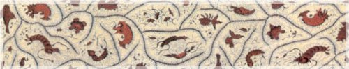

Mekanisme persidangan Rembuk Nasional Pendidikan Tahun 2011 ini, ditempuh melalui Sidang Pleno dan Sidang Komisi. Secara lebih rinci mekanisme persidangan diatur sebagai berikut:
Hari Rabu, 16 Maret 2011
- UcapanSelamat Datang dalam Penyelenggaraan RNPTahun 2011yang disampaikan olehSekretaris Jenderal;
- Pembukaan dan Pengarahan olehMenteri Pendidikan Nasional;
- Penandatanganan MoU antara Mendiknas dengan Kepala Badan Pusat Statistik (BPS);
- Kemudian dilanjutkan oleh paparan Ketua BPK tentang “Strategi Laporan Keuangan Menuju Opini WTP”;
- Paparan Wakil Mendiknas tentang “Pendidikan Karakter Bangsa”;
- Paparan oleh Bupati Gorontalo tentang Sucsess Story perluasan dan peningkatan kualitas pendidikan di Kabupaten Gorontalo;
- Konferensi Persoleh Mendiknas didampingi oleh Pejabat Eselon I di lingkungan Kemdiknas;
-
Sidang Pleno I, yang diisi dengan penyampaian materi oleh:
- Penyampaian materioleh pembicara tamu: Menko Perekonomian tentang “Pengembangan SDM dalam Menyongsong Pembangunan Ekonomi Tahun 2025”;
- “Sucsess Story Pengembangan PAUD” oleh praktisi pendidikan;
- “PenyelarasanPendidikan dengan Dunia Kerja”oleh praktisi ekonomi.
- Pada malam harinya diisi dengan ramah tamah antara Mendiknas dengan para pemangku kepentingan bidang pendidikan (pemerintah, pemerintah daerah dan masyarakat) dengan diiringi kelompok kesenian Kiai Kanjeng yang dipimpin oleh Bapak Emha Ainun Nadjib
Hari Kamis, 17 Maret 2011
Dilaksanakan sidang komisi 1 s.d 7 yang akan membahas 7 topik bahasan dengan rambu-rambu diskusi sebagai berikut.
- Diskusi Sidang Komisi diawali dengan paparan oleh masing-masing Ketua Komisi;
- Ketua Komisi memimpin sidang, mengarahkan, dan bertanggung jawab terhadap pelaksanaan sidang komisi;
- Ketua Komisi mengendalikan jalannya sidang komisi berdasarkan bahan sidang komisi yang telah disiapkan oleh Tim Substansi RNP 2011;
- Sidang Komisi membahas masalah, isu-isu aktual serta menyampaikan solusi dan rekomendasi kebijakan;
- Seluruh peserta diharapkan berperan aktif serta memberikan masukan tertulis sesuai dengan matrik yang telah disiapkan oleh Tim Substansi;
- Koordinator Perumus dibantu oleh Tim Perumus dan petugas substansi menghimpun/merekam proses sidang komisi dan merumuskan hasil sidang komisi;
- Tim Perumus dimungkinkan untuk ditambah dari peserta daerah yang ditunjuk oleh Ketua Komisi maupun Koordinator Perumus;
- Perumusan hasil sidang komisi di pimpin oleh Koordinator Perumus dan harus selesai paling lambat pukul 21.30 WIB;
- Petugas substansi membantu menyiapkan bahan-bahan diskusi yang diperoleh dari penanggungjawab materi diskusi (unit utama) untuk dibagikan kepada semua anggota komisi dan secara aktif membantu kelancaran proses diskusi sampai dengan perumusan hasil sidang komisi;
- Koordinator Perumus bersama dengan Tim Perumus dan petugas substansi mempersiapkan paparan hasil rumusan untuk dilaporkan kepada Mendiknas pada waktu acara penutupan RNP 2011;
- Laporan hasil sidang Komisi 1 s.d 7 disusun dengan mengacu pada outline laporan (terlampir).
Hari Jumat, 18 Maret 2011
Sidang Pleno IImerupakan acara penutupan Rembuk Nasional Pendidikan, dengan agenda kegiatan sebagai berikut:
- Laporan Ketua Umum Penyelenggara tentang dinamika pelaksanaan Rembuk Nasional Pendidikan Tahun 2011;
- Laporan Hasil Sidang Komisi yang disampaikan oleh masing-masing Ketua Komisi 1 s.d. 7;
- Penutupan dan Konferensi Pers oleh Menteri Pendidikan Nasional didampingi Wakil Mendiknas dan seluruh Eselon I Kemdiknas.